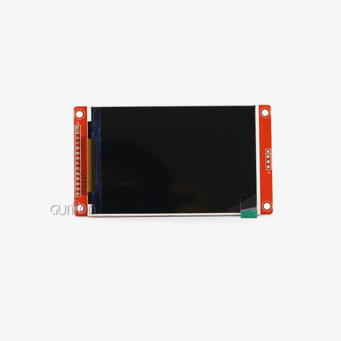

JC3248S035N
Guition · Industrial display screen module
JC3248S035N is a 3.5" 320x480 ESP32 display board by Guition based on the none (bare display).
Features, ports & interfaces
- SPI display (4-wire)
Specifications
| Parameter | Value | Source |
|---|---|---|
| Screen size | 3.5" | source |
| Resolution | 320x480 | source |
| Shape | Rectangular | |
| Display interface | SPI | source |
| Display driver | ILI9488 | source |
| Touch | None | source |
| MCU family | none (bare display) | |
| Category | SPI Display Module | |
| Dimensions | 99.0mm (L) × 54.9mm (W) | source |
| Interface detail | 4-wire SPI Serial Port | |
| Vendor | Guition |
Official links & documentation
Files
Offline copies are available on the interactive page.